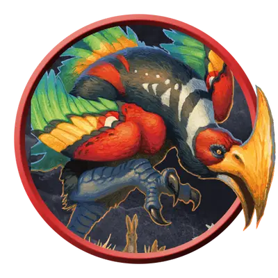

Гигантский топороклюв
Giant Axe Beak
Огромное Чудовище, без мировоззрения

Класс Защиты 15 Инициатива +5 (15)
Хиты 84 (8к12 + 32)
Скорость 50 футов
| мод | спас | ||
|---|---|---|---|
| СИЛ | 21 | +5 | +5 |
| ЛОВ | 14 | +2 | +2 |
| ТЕЛ | 19 | +4 | +4 |
| мод | спас | ||
|---|---|---|---|
| ИНТ | 3 | −4 | −4 |
| МДР | 12 | +1 | +1 |
| ХАР | 5 | −3 | −3 |
Чувства пассивное Восприятие 14
Языки нет
Опасность 5 (1 800 опыта; БВ +3)
Действия
Мультиатака. Топороклюв совершает одну атаку Заострённым клювом и одну атаку Когтями.
Заострённый клюв. Бросок рукопашной атаки: +8, досягаемость 10 фт. Попадание: 18 (2к12 + 5) Рубящего урона, и существо в пределах 5 футов от цели (по выбору топороклюва) получает 6 (1к12) Рубящего урона.
Когти. Бросок рукопашной атаки: +8, досягаемость 5 фт. Попадание: 14 (2к8 + 5) Колющего урона. Если цель Большого размера или меньше, она становится Опрокинутой.
Бонус мастерства +3
Среда обитания Любая
Сокровища Личные, Инструментальные
Топороклювы
Нелетающие хищные птицы
Топороклювы — это нелетающие птицеподобные создания с примечательными клювами в виде лезвия секиры. Стремительные хищники, они загоняют добычу и прорубаются клювами сквозь заросли, что укрывают жертву. Топороклювы обитают в самых разных средах. Ярко оперённые особи носятся по тропическим равнинам, а их сородичи с белоснежным пером охотятся средь тундры.
Топороклювы с трудом поддаются дрессировке, однако те, что вылупились и взращены в неволе, способны стать надёжными скакунами.
Гигантские топороклювы, как правило, обитают в уединённых первозданных краях — на изолированных островах, в подземных кавернах и тому подобных. Зачастую им приходится оспаривать территорию у динозавров и прочих гигантских зверей.